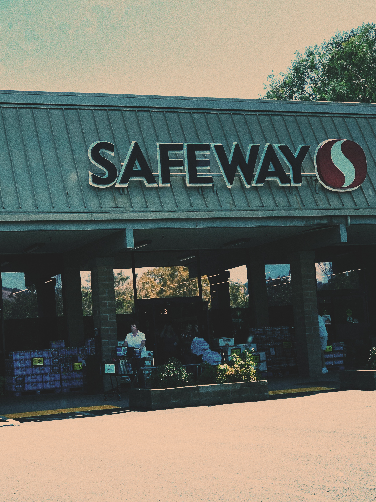
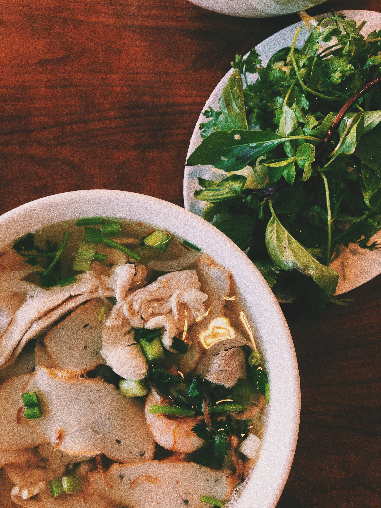
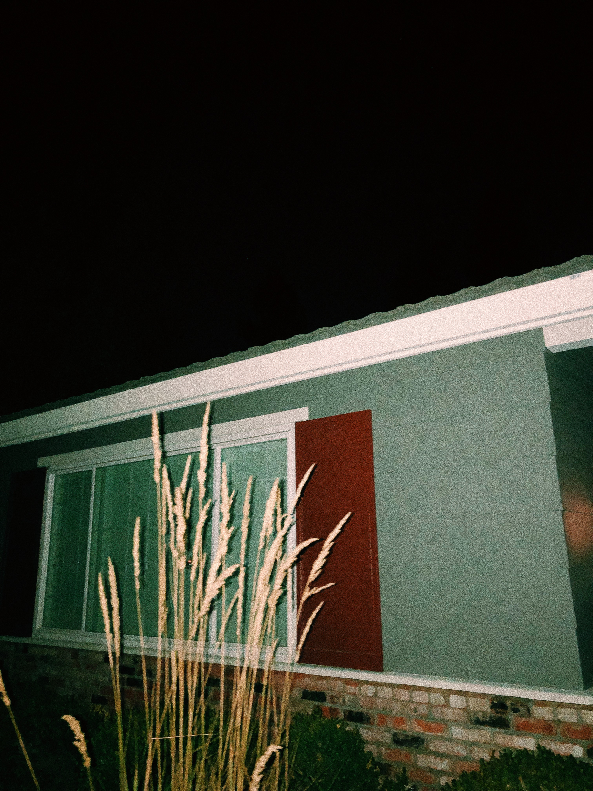

NEIGHBORHOOD
One of my favorite areas that I often frequent is not necessarily an exact
area at all. It is instead a collection of slightly distant locations that
are all tied to the same memory. All of these places were the most visited
locations between me and my boyfriend when we first met. They are all
relatively in the same place, that being a mix between Walnut Creek and
Pleasant Hill. My boyfriend and I are long distance during the school year
so whenever I miss him, I find it therapeutic to take myself on a driving
tour around these areas to put my mind and heart at ease. Every one of
these locations will probably always hold powerful memories of time spent
with him, which may prove unfortunate when (if! lol…) we break up, but for
now is very comforting and kind of cute.
LARKEY PARK


Larkey Park is a park located in the backstreets of Walnut Creek bordering
on Pleasant Hill. It has a swimming poll, play structure, and picnic area.
My boyfriend and I would walk his dog around here at night when we should
have just gone home but wanted an excuse/space to keep hanging out.
Learn more about Larkey Park here!
SAFEWAY
Safeway, as I'm sure you all know, is a chain grocery store in Northern
California. This specific Safeway is open 24 hours so it was perfect for
picking up late night snacks before driving out of town or ice cream at 4 AM
on a first date. The bathrooms are pretty nasty, though. Would not recommend
for any potty breaks unless it's an absolute emergency.
Learn more about Safeway here!
PHO HUYNH HIEP 6
A hidden pho restaurant in downtown Walnut Creek that I admitedly have only
eaten at twice. And only one of those times was with my boyfriend. But it holds
significance because it's the restaurant he would always go to with his mom and
hadn't brought anybody else there before. We went after I gave him a hair cut
which looked super good despite him saying otherwise.
Learn more about Pho Huynh Heip 6 here!
MIXED GRAIN

Mixed Grain is a Korean cuisine restaurant that we eat at a lot. My
favorite thing to order is Soondubu, or soft tofu stew (extra spicy and
with seafood). It is a fairly popular spot to eat that’s located in downtown
Walnut Creek. I don’t only visit this restaurant with my boyfriend, my
friends and I usually go here for lunch and gossip, too. Lots of conversations
about boys, death, outer space, and celebrity tea.
Learn more about Mixed Grain here!
MY HOUSE
This one seems fairly self-explanatory. It is my house.
No link to my house... That's personal...